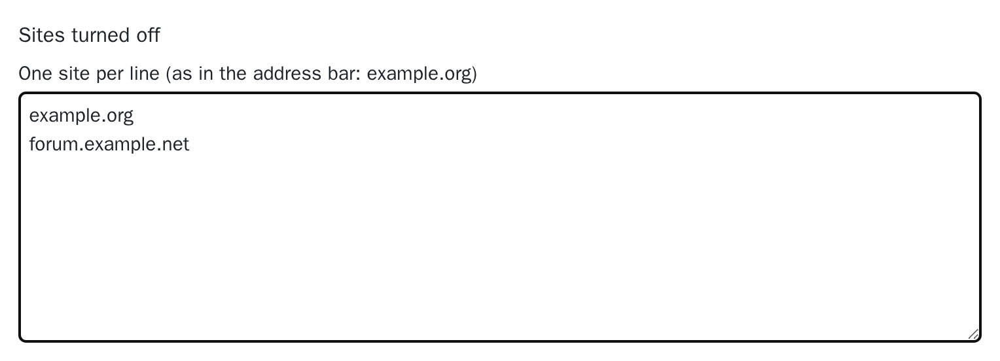

On some sites you may not want references linked. You can turn the extension off for one site without affecting any other.
The links go away at once, on every open page of that site. Clear the checkbox to bring them back.
The settings page lists the sites under Sites turned off, one per line, written as in the address bar (example.org). Add or remove lines there to change several at once.

A site is its exact name: turning it off on example.org doesn't turn it off on forum.example.org.